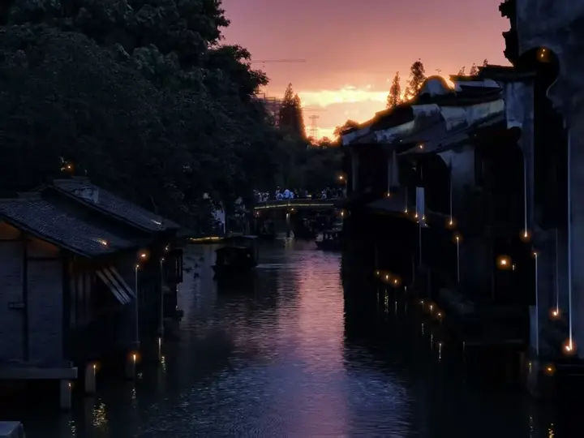

西北农林科技大学985 / 保研
英语笔译 | 硕士
主修课程：文学翻译、基础笔译、中国语言文化、翻译概论
3.92/4.0GPA
5/31专业排名
英语笔译 | 硕士
主修课程：文学翻译、基础笔译、中国语言文化、翻译概论
3.92/4.0GPA
5/31专业排名
英语专业 | 本科
主修课程：语言学概论、词汇学、英语口语、传媒英语、管理学原理、Python课程、经济学原理、高数课程等
3.56/4.0GPA
17/100学分排名

ON THE WAY
照片由本人于乌镇亲摄
永不停止跑动的脚步去提升自己
搭建 5 张月度数据报表，使用 Excel VBA 遍历字段、标记流程卡点；参与 NEO 培训统筹与学习资源制作。
基于 RHTV 搭建 AI 培训课程创作工作流，完成本地化剧本、角色与场景设计、分镜及视频制作实践。查看情景领导力课程项目
围绕老年群体与数字生活等议题开展选题研究与深度稿件写作，完成三篇纸质稿件，并有作品在公众号及新华社客户端发布或转载。
研究刊物调性、时效性、政策契合度及采访可行性，借助 AI 辅助建立选题筛选框架；调整后一轮提交的 10 个选题中有 7 个通过。
参与多平台产品推广，产出 20 余篇公域文案，抖音单篇浏览量超过 1 万；结合平台特点与受众反馈调整内容表达。
负责 3 个班级的日常管理、量化考核、媒体宣传与评价反馈，主动对接学员和家长，沟通学习表现并提供针对性建议。
参与 POI 项目，完成地理与金融类词条翻译近十万字。
参与 VOC 项目：整理 Amazon 用户评论，进行翻译、语料清洗和标签化，通过数据透视表识别主要反馈，为理解用户需求提供参考。
完成 5 次采访与 4 次稿件撰写，涉及企业帮扶招聘会、视障人士出行与养老服务等主题；稿件发表于陕西日报网及纸质版报纸，1 篇被知网收录。
面向澳门长者的养老金信息与测算网页。围绕制度理解、供款年限与申领信息，探索更容易理解和操作的交互方式。
从需求与政策梳理，到功能取舍、页面设计和网页实现，完成一次从问题出发的自主产品实践。
访问澳养通围绕跨境自媒体文案生成场景制作的网页原型，用于探索产品介绍、内容生成场景与页面交互的呈现。
当前以网页原型展示设计与交互思路。
查看网页原型公共事件处理与归档项目系统
围绕事件发生、调查、处理与归档，探索信息留存、人工确认、时限跟进与可追溯的处理流程。
清华 Infra 黑客松软件赛道三等奖获奖项目。
访问项目系统统筹研究生会事务与部门分工，协调各部门合作，跟进活动执行；参与运动会与跨院学术活动的组织工作，在沟通与协作中推动任务落实。
外事办志愿者 · 核心会务组
外事办志愿者 · 圆桌会议组
A · 文化传播
把工厂里发生的好事写成推文，让1400人都能看见。
围绕企业培训课程，自主研究 AI 视频创作平台，并基于 RHTV 搭建从剧本、资产、分镜到视频生成与后期处理的创作工作流。将工具选型和操作经验整理成《AI 视频创作平台手册（自用）》，作为持续制作课程的参考。
区分视频生成模型与一站式创作平台，从模型能力、独特功能、使用体验、价格四个维度进行比较，关注角色、空间、音频和剪辑能力。
将课程内容转化为本地化情景剧本，整理人物形象、姓名与细节图，准备场景、道具、特效和美术色彩参考，形成可复用的资产基础。
把剧本拆解为分镜，明确角色动作、场景关系、景别和画面风格，组织参考图与提示词，逐步搭建画布中的创作节点。
利用导演台设置人物相对位置、姿态、机位与打光，将空间参考带入分镜图生成，尽量保持人物站位与画面关系的一致。
结合角色参考、分镜图和提示词生成视频片段，检查人物动作、指令理解、情绪表达与空间关系，对不符合预期的片段调整制作。
组织台词、音乐与音效，对片段进行拼接、节奏调整和二次加工；将平台差异、操作要点和制作经验记录进自用手册。
个人贡献：平台调研与选型、工作流搭建、本地化剧本、角色与场景设计、分镜及生成制作实践。
视频暂时无法播放，请使用浏览器打开此 HTML 文件。
视频暂时无法播放，请使用浏览器打开此 HTML 文件。
中国大学生计算机设计大赛西北赛区二等奖
围绕苏轼诗词组织教学片内容，通过读诗入境、画面叙事、逐句剖析与生平背景形成讲述结构。负责全程剪辑，将古风素材动画与诗词意境、教学节奏相结合。
以光、水、花与酒为视觉线索，在宿舍利用简易灯光、亚克力板与鲜花搭建拍摄场景，尝试水波纹光影、产品特写与慢动作镜头。
完成镜头设计、拍摄与剪映后期，结合特效和配乐调整成片节奏。
如果你想进一步了解我的经历、作品或求职意向，欢迎联系。